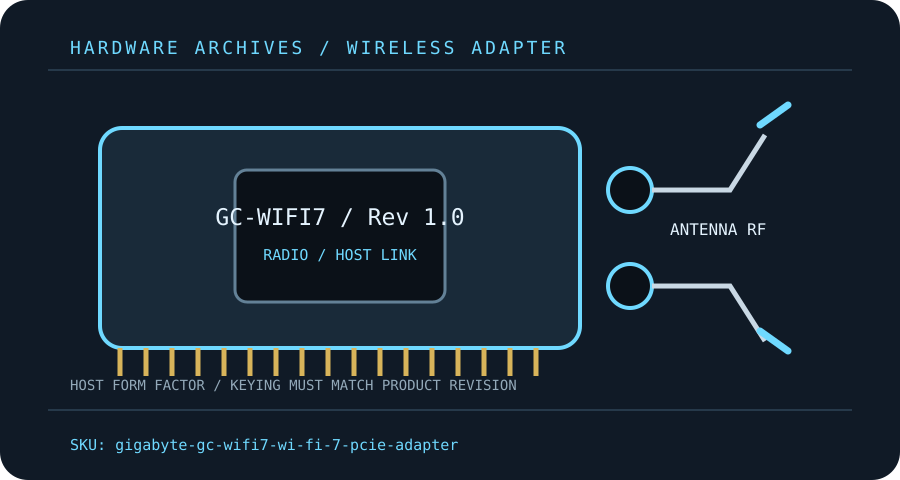

[ MODEL-SPECIFIC M.2 / PCIE WI-FI HARDWARE ]
GIGABYTE GC-WIFI7 Rev. 1.0 Wi-Fi 7 PCIe Adapter
A revision-specific PCIe x1 Wi-Fi 7 card with two-stream tri-band radio, remote antenna and Bluetooth.
IDENTIFICATION: Match the full model, hardware revision, regulatory region and radio-module label before ordering replacements or selecting drivers. Values are manufacturer specifications, not a guaranteed measurement.

Dedicated wireless specifications
| Cataloged product | GIGABYTE GC-WIFI7 Rev. 1.0 Wi-Fi 7 PCIe Adapter |
|---|---|
| Chipset / radio module | GIGABYTE support identifies Qualcomm driver packages for this revision; the public product page does not specify an exact SoC part number. |
| Wi-Fi generation / standards | Wi-Fi 7 / IEEE 802.11be with backward compatibility to a/b/g/n/ac/ax. |
| Radio bands, channels & width | 2.4 GHz, 5 GHz and 6 GHz; up to 320 MHz channel width under permitted 6 GHz rules. |
| Spatial streams / nominal link rates | 2×2 MIMO; manufacturer advertises up to 5.8 Gb/s combined nominal link rate. |
| Host interface / form factor / keying | PCI Express x1 adapter with internal USB 2.0 header connection for Bluetooth; confirm board/revision and driver package. |
| Antenna connectors | Two external antennas attach to the supplied adjustable/magnetic base through included threaded RF connections; confirm mating standard before substituting antennas. |
| Bluetooth | Bluetooth 5.3; install its separate driver and connect the internal USB header cable. |
| Operating-system / driver compatibility | GIGABYTE lists Windows 11 for this Wi-Fi 7 card and provides revision-specific drivers; other OS use depends on available kernel/firmware support. |
| Regulatory and host caveats | GC-WIFI7 Rev. 1.0 identity is important: the support page and driver package must match the printed revision. Wi-Fi 7, 6 GHz and 320 MHz behavior requires compatible AP, current driver and a lawful regulatory domain. PCIe x1 plus a motherboard USB header are needed. |
Model-specific installation notes
Install only with the host powered down and follow the manufacturer’s manual for slot, cable, antenna and ESD precautions. Fit and electrical compatibility are separate questions: the host must support the stated interface, firmware and driver for this exact SKU.
Nominal PHY rates vary with channel width, modulation, signal quality, regulatory domain, AP capabilities and concurrent client traffic. They are not measured Internet or application throughput. Confirm local 6 GHz/5 GHz channel permissions before deployment.
Manufacturer sources
- GIGABYTE GC-WIFI7 Rev. 1.0 product pageGIGABYTE model-specific feature and driver information.
- GIGABYTE GC-WIFI7 Rev. 1.0 support and downloadsOfficial revision-specific support and driver downloads.
Source pages can be regional or revision-specific. Use the exact manufacturer page and package matching the label on the adapter and host.